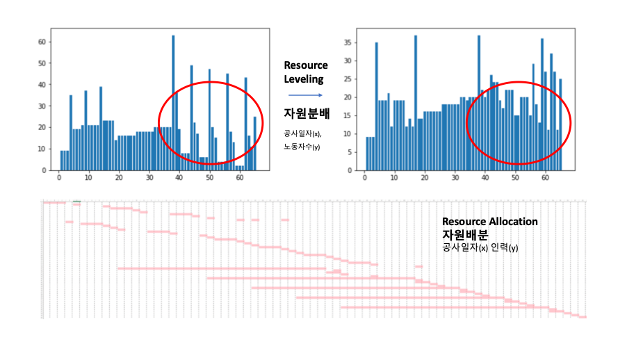

Project
> UX/UI
텀블러 UX 개선 [제품개발 프로젝트]
2018.09 ~ 2018.12
텀블러 VoC를 수집하고, CUPID 프로그램으로 HOQ를 만들어 QFD를 실행함. SPSS로 다차원척도법을 이용한 사용자선호를 도출하 였고, 요구사항 중 모순적 부분을 TRIZ기법을 통해 절충하여 Fusion360 으로 디자인하여 텀블러 UX를 개선함.
pdf 보기
'지도기반' 데이트 코스 어플 [UX/UI, 개발]
2017.07 ~ 2017.08
IT리더십 애플 앱개발 특강(120시간)에 참여하여 ‘지도기반 코스어플’에 대한 아이디어를 ADS로 정의하고, 사용자 분석을 통해 목업을 구성함. 사용자 인터페이스에 대한 가이드라인 등을 고려하여 UX/UI를 설계. Swift를 통해 직접 구현 및 구동하며 프로토타입을 개선함.
관련링크
pdf 보기
컴퓨터동아리(KUCC) 홈페이지 [UX/UI]
2020.01~
프로토타이핑에서 여러 레퍼런스를 참고하여 기능목록을 구성하고, 개발자와 디자이너와의 회의를 통해 일정과 구현능력을 감안하여 기능목록을 1차기능（처음 배포할 때 포함될 기능） 및 2차기능으로 나눔. 페이지 UX 구성 및 Adobe XD를 통한 UI 디자인을 수행함.
관련링크
pdf 보기
옷사이즈 추천시스템 [정보시스템설계 프로젝트]
2018.03 ~ 2018.06
쇼핑몰 조사를 통해 사이즈 추천 기능 부재를 확인하고, 고객이 신체정보를 입력하면 상품마다 사이즈를 추천해주는 시스템을 기획함. 데이터베이스를 구성하고 관리자의 입장을 생각하여 Query를 설계. SQL문을 작성하여 소비자/관리자페이지를 개발(javascript, html, css, sql)함.
pdf 보기

자원할당/분배(PM) 시스템 [공정관리 프로젝트]
2019.03 ~ 2019.06
PM에서 Resource가 제한되어 있을 때 Allocation(제한된 자원을 배분), Leveling (프로젝트 기간이 바뀔 수 없을 때 자원의 효율적인 사용 고려) 을 사용하는데, 프로젝트를 수행할 때 엑셀로 자원분배를 하는데 어려움을 느낌. 따라서 Python으로 제한자원을 입력값으로 받아 출력값으로 자원을 분배해주는 시스템을 제작함.
pdf 보기